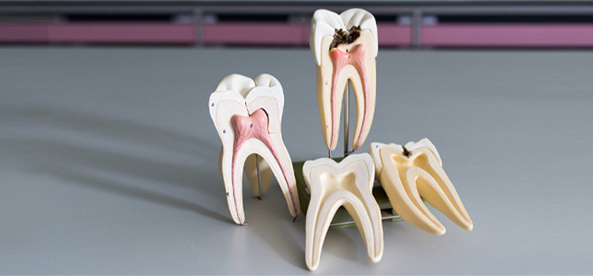
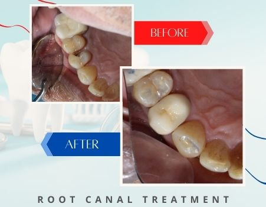

While this procedure has a bad reputation for being painful, it actually significantly reduces discomfort and allows our team to save a tooth that may otherwise need to be extracted.
If you’re experiencing pain or you need a root canal, it’s time to call Sriram Dental to schedule an appointment. We’ll examine your smile and help you to determine what treatment you need to renew your oral health.
Root canals are restorative dentistry treatments necessary when patients experience tooth decay or damage that reaches the very inner layer of the tooth, called the pulp. The tooth’s nerve is housed within the pulp, so when the damage or decay reaches the pulp layers of the tooth, the result is a severe toothache or dental sensitivity. Root canal therapy is used to remove the damaged pulp and nerve system, relieve tooth pain, and fully renew oral health. In addition to relieving the pain and sensitivity experienced by most patients, root canal therapy allows us to save a tooth that may otherwise need to be extracted.

During a treatment consultation, we’ll review your damaged tooth or teeth and help you to determine whether or not you need a root canal. We recommend patients contact us right away if they notice any of the following common warning signs that root canal therapy may be necessary:
Root canal therapy is easily the most dreaded restorative dentistry procedure, but it is actually safe and effective. Best of all, it almost immediately relieves pain for most patients. During your root canal treatment, we’ll numb the damaged area. Then, we make a small access hole from the top of the tooth to the inner pulp layer. The pulp, nerve, and damaged tissues are extracted through this access hole. Next, we clean out the inside of the tooth to ensure it’s free from decay-causing plaque and bacteria. Once the tooth is completely clean, we refill it with a biocompatible substance. The access hole is resealed using composite resin. For most patients, we also recommend the placement of a dental crown to strengthen and protect the damaged tooth.
Following root canal therapy, you should experience immediate relief from any tooth pain or dental sensitivity you experienced prior to treatment. Some patients do have swelling around the treated tooth and sensitivity for the first few days, but the majority of patients feel back to normal right away. If you do continue to experience toothache or sensitivity, you should reach out to our team right away.